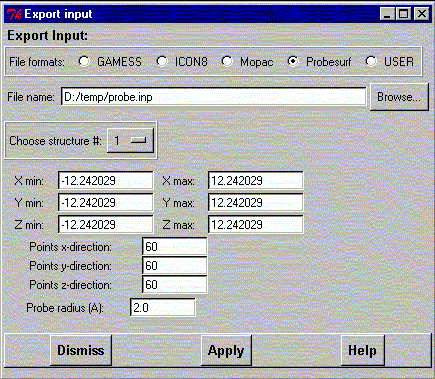
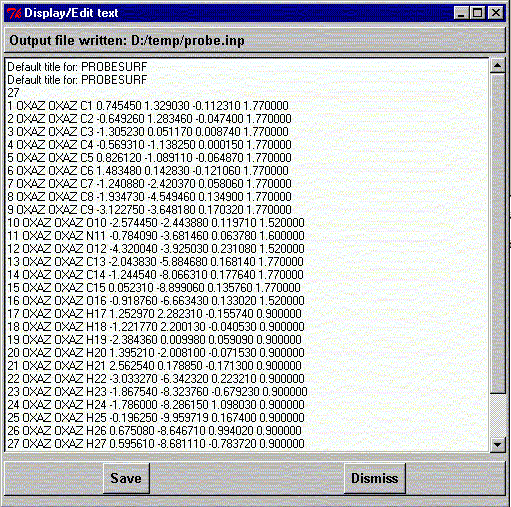

**************************************************************************
export input for external porgrams
Leif Laaksonen CSC 1999
**************************************************************************
Using this widget it is possible to export (mostly very raw) input files for the following programs:
The probe surface program PROBESURF generates a mesh with grid values from 0 to 100. The value 100 is at the vdW value and value 0 is at the vdW + max. probe diameter value.
There are two methods available to calculate the values between 0.0 and 100.0.
It is possible to generate the surface for different probe values. The method is based on the article by R. Voorintholt et al. (Voorintholt R., Koster M.T. , Vegter G. , Vriend G. and Hol W.G.J., "A very fast program for visualizing protein surfaces, channels and cavities", J. Mol. Graphics 7 (1989) 243-245)
Currently onlu the Probesurf program has some extra options available. It is possible to define the max and min x-, y- and z- values to define the place of the box for which the grid values are calculated. It is also possible to define the number of grid points in the x-, y- and z-directions. The max probe radius defines the largest probe radius that can be displayed using the current grid values.
Choose the output option and file name (or click the Browse button to browse).

After pressing the Apply button the file is written to disk and a widget containg the file input is shown. It is possible to edit the data in the widget and save the new content to disk by clicking the Save button. The file will always have the same name as the original file had.
Line command : see export command
**************************************************************************
LUL/1999
**************************************************************************